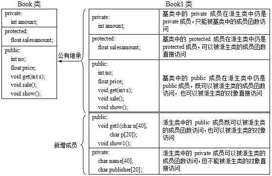
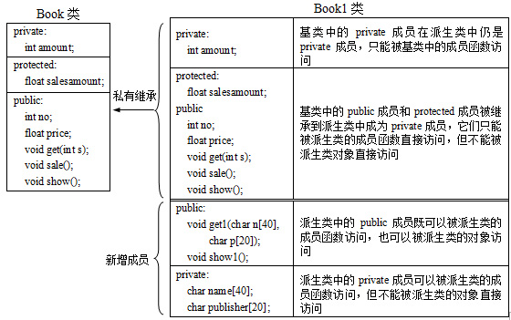
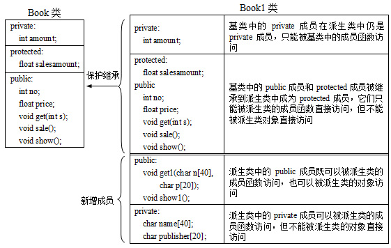

派生类的继承方式
1．公有继承
当派生类的继承方式是公有继承（public）时，基类的public成员和protected成员的访问属性在派生类中保持不变，基类的private成员被继承到派生类中仍是基类的private成员。

公有继承时成员的访问权限
2．私有继承
当派生类的继承方式是私有继承（private）时，基类的public成员和protected成员被继承到派生类中成为private成员，基类的private成员被继承到派生类中仍为private成员。

私有继承时成员的访问权限
3．保护继承
当派生类的继承方式是保护继承（protected）时，基类的public成员和protected成员被继承到派生类中成为派生类的protected成员，基类的private成员被继承到派生类中仍为private成员。

保护继承时成员的访问权限